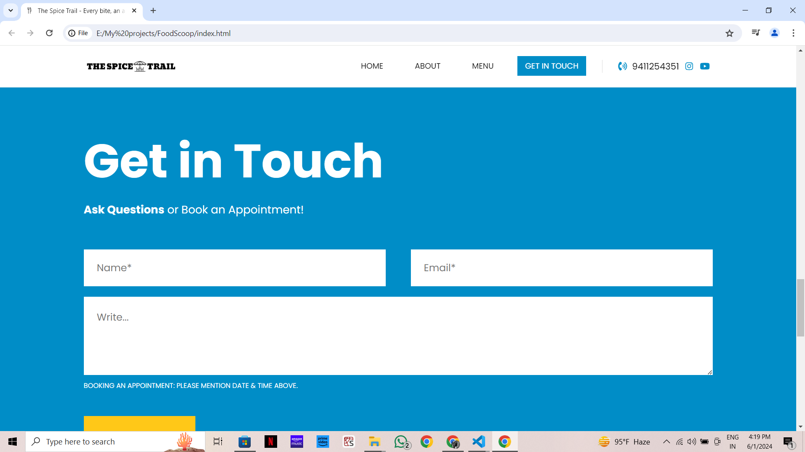

I bring websites to life with a strong foundation in HTML, CSS, and JavaScript. From crafting clean and semantic code ([HTML]), to building visually stunning interfaces ([CSS]), and implementing interactive features with JavaScript, I ensure user-friendly and engaging web experiences. My skills were honed through [personal projects/freelance work/academic background], where I developed a passion for creating innovative and responsive websites. I'm a team player who thrives in collaborative environments and is eager to contribute my skills to your organization's next web project.
